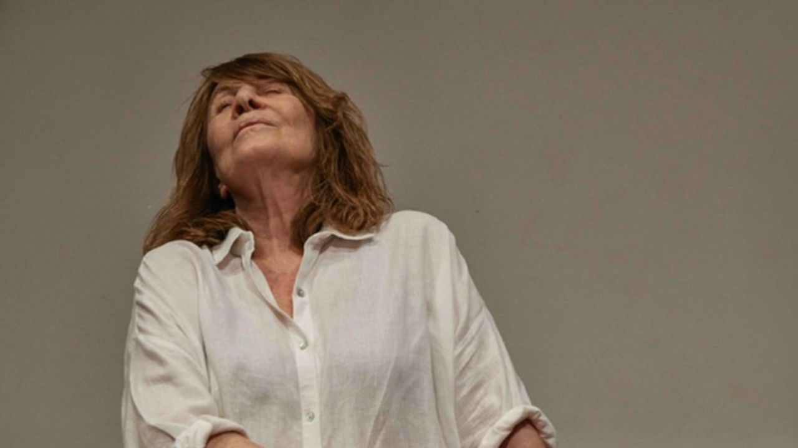

“Ao Vivo [dentro da cabeça de alguém]”, com Renata Sorrah, faz curta temporada no Sesc Guarulhos até 15 de março

Criação da companhia brasileira de teatro, com dramaturgia original e direção de Marcio Abreu, espetáculo propõe um mergulho íntimo na construção da identidade e no papel da arte no presente.
A peça “Ao Vivo [dentro da cabeça de alguém]” chega ao Sesc Guarulhos para curta temporada de 6 a 15 de março, com sessões sextas e sábados, às 20h, e domingos, às 18h. Com dramaturgia original e direção de Marcio Abreu, a montagem é inspirada em A Gaivota, de Anton Tchekhov, e dá continuidade a uma linha de pesquisa da companhia brasileira de teatro, que investiga o agora por meio de diálogos inventivos com obras clássicas.
No elenco estão Renata Sorrah, Rodrigo Bolzan, Rafael Bacelar, Bárbara Arakaki e Bianca Manicongo. A peça se passa “dentro da cabeça” de uma artista — da Renata, da Nina, da Bianca, da Bárbara, do Bolzan, do Rafael, e de todas as pessoas que criaram o trabalho — como se o público pudesse atravessar consciências e subjetividades em constante movimento: coisas que surgem, desaparecem e se transformam no instante seguinte.
Partindo das perguntas que Tchekhov ainda nos devolve hoje — quais direitos estão garantidos para uma mulher em uma sociedade machista, etarista e conservadora? Como jovens artistas buscam voz? Qual o valor da arte e que espaços ela pode ocupar? — o espetáculo acompanha a memória de uma atriz que, nos anos 1970, participou de uma célebre montagem de A Gaivota no Rio de Janeiro. A caminho de um ensaio, ela rememora um dia em que, dirigindo, sentiu como se o topo da cabeça se abrisse: uma consciência súbita do todo, de si e do mundo. A partir desse estado, ela revisita personagens de sua vida e de sua arte, atravessando tempo passado e futuro — ao vivo, hoje.
Os ingressos estão disponíveis pelo app Credencial Sesc SP, pela Central de Relacionamento (digital) e nas bilheterias das unidades do Sesc.
Sinopse
A peça se passa dentro da cabeça de uma artista. Da Renata, da Nina, da Bianca, da Bárbara, do Bolzan, do Rafael, de todas que criaram esse trabalho. Como se pudéssemos perceber outras consciências, outras subjetividades, coisas que são, e de repente já não são mais. Coisas que se revelam, e desaparecem, algo que vejo e de repente, já não está mais ou já não é.
Serviço
Espetáculo: Ao Vivo [dentro da cabeça de alguém]
Temporada: 06/03 a 15/03 (em cartaz até 15 de março)
Sessões: sexta e sábado, às 20h | domingo, às 18h
Local: Sesc Guarulhos — Teatro (349 lugares)
Endereço: R. Guilherme Lino dos Santos, 1200 — Jardim Flor do Campo — Guarulhos
Classificação: 16 anos
Ingressos: R$ 60 (inteira) | R$ 30 (meia) | R$ 18 (credencial plena)
Vendas: App Credencial Sesc SP | centralrelacionamento.sescsp.org.br | bilheterias das unidades
Duração: 90 minutos
Acessibilidade: acesso para pessoas com deficiência
Estacionamento: R$ 15,50 (não credenciados) | R$ 8,50 (credenciados)
Paraciclo: gratuito (necessário uso de trava de segurança) — 248 vagas
Para outras programações: portal do Sesc Guarulhos